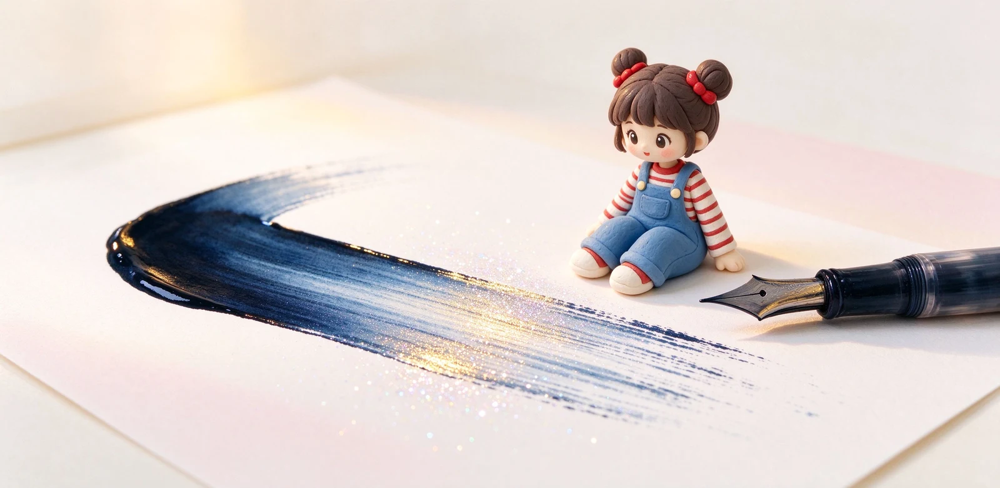

語意摘要：Shading 是同一個筆畫裡，墨多處深、墨少處淺的層次感；sheen 是墨水在紙上堆厚乾掉後，側光看會浮出的第二種金屬色；shimmer 則是刻意加進去的雲母亮粉，會讓紙面亮晶晶。三者都需要出墨飽滿的筆、較粗的字幅與光滑不吸水的紙才表現得出，亮粉墨還會沉澱要常洗筆。
三個名詞先分清楚：層次、光、粉
剛入門的人最常把這三個混在一起。其實它們是三件完全不同的事：
- Shading（ shading 層次）：同一筆裡，墨積得多的地方深、出墨快的地方淺，像字有了立體明暗。
- Sheen（光澤）：墨水在紙上堆厚、緩慢乾掉時，表面浮出的第二種金屬色，要斜著光才看得到。
- Shimmer（閃粉）：墨裡故意加的雲母亮粉，沉在紙面，從任何角度都看得到閃。
記住順口的：shading 是「深淺」、sheen 是「反光」、shimmer 是「亮粉」。一個看明暗、一個看角度、一個看晶亮，挑墨時分開期待就不會失望。
Shading：讓你的字看起來有手作感
寫下去那筆，開頭跟轉折處墨留得多，顏色深；收尾跟出墨快的地方墨薄，顏色淡。一個「の」字一頭深一頭淺，這就是 shading。它是最容易獲得、也最療癒的效果，讓一般書寫也有書法的手感。
百樂色彩雫的紺碧 Kon-peki 就是 shading 名品：薄處是淺天藍、積墨處是深蔚藍，一筆之內拉出漸層。它最好在出墨較濕、字幅略粗（F 或 M）、紙張光滑的條件下才明顯；細尖加會吃墨的紙，層次就被吃掉了。

Sheen：斜光才現身的隱藏金屬色
Sheen 比較挑食。它要墨水在紙上堆得夠厚、乾得夠慢，讓表層多餘的色料分離出來，才會在邊緣反光出另一種顏色——深藍墨邊緣閃紅銅色、墨綠墨閃紫。你得把本子斜過去對著燈看，才會發現這個彩蛋。
sheen 最需要「出墨旺的筆」加上「不吸水的紙」。Tomoe River 這類薄而滑的紙、或全細道林紙，墨浮在表面慢乾，sheen 最明顯；一灑到會吃墨的紙，墨被吸進纖維，sheen 就消失了。
| 效果 | 成因 | 需要的條件 | 代表 |
|---|---|---|---|
| Shading | 墨量多寡造成深淺 | 濕筆、M 尖、普通紙 | 色彩雫紺碧 |
| Sheen | 表層色料分離反光 | 濕筆、光滑不吸水紙 | Sailor 山鳥、Organics |
| Shimmer | 雲母亮粉懸浮 | 任何紙都亮，但會沉澱 | 各品牌閃粉限定墨 |
Shimmer：夢幻亮粉，但要付出代價
Shimmer 墨就是在墨水裡混了細細的金屬或雲母粉末，寫上去紙面亮晶晶，手帳點綴超夢幻。很多限定款、季節款都走這個路線，少女心噴發。
但它有個麻煩：那些亮粉是固體顆粒，會慢慢沉到墨水瓶底、也會卡在筆舌。原則上 shimmer 墨最好用專筆，用完立刻洗，別拿你心愛的筆長期泡。每次吸墨前要輕輕搖瓶讓粉末重新懸浮，寫出來的亮粉才均勻。
想讓效果出來，筆尖與紙要配合
買了傳說中的 sheen 墨，回家寫起來卻平平的？八成是筆太細、紙太會吃墨。想要這些效果，請對號入座：
- 筆尖選偏濕、略粗的（F 或 M），細 EF 墨量太少，效果出不來。
- 紙選光滑、克重高、不太吃墨的（如巴川紙、Tomoe River 類）。
- 下筆轉折、積墨的地方留著別急著擦，效果在那裡最明顯。
- Shimmer 墨吸墨前先輕搖瓶身，讓沉澱的亮粉打勻。
常見問題 FAQ
shading、sheen、shimmer 到底差在哪？
為什麼我買的 sheen 墨寫起來沒有光澤？
shimmer 亮粉墨水傷筆嗎？
哪一瓶是新手第一次玩效果墨的好選擇？
效果墨適合日常寫字嗎？
資料來源與核實依據
- Ink Sheen, Shading & Shimmer: The Complete Guide（The Journal Shop）
- Pilot Iroshizuku Kon-peki（shading 與 sheen 表現）（Shosai）
- Understanding Ink Properties（sheen 成因與代表 Sailor Yama-dori）（Ink Palette）
- Best Shimmer & Sheen Inks（shimmer 為懸浮雲母顆粒）（Ink Palette）
相關文章推薦

鋼筆墨水怎麼選？染料、顏料、防水墨水差別與新手入門
新手第一瓶墨水，九成情況選「水性染料墨水」就對了：顏色飽滿、不傷筆、好清洗；顏料跟防水墨水是畫圖、要防潑水才需要的進階款。

墨水顏色怎麼搭？鋼筆、紙張與手帳配色的實用邏輯
選墨水顏色先問用途：筆記用藍黑最耐看，手帳用一個主色加一點綴色；色票跟本子底色的關係，比你想像的影響更大。

鋼筆專用紙怎麼選？巴川、三河塼、MD 用紙抗暈透比較
鋼筆紙分兩派：超薄派的巴川紙 52g 幾乎不暈但會透背，厚實派的 MD 用紙 80g 正反面都乾淨；選哪派看你要輕盈還是要整潔。